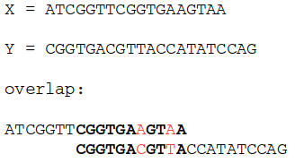
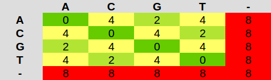
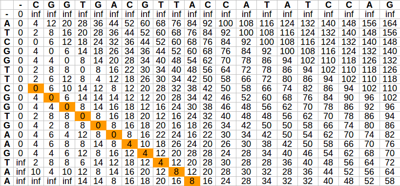
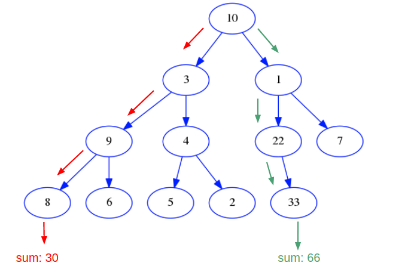
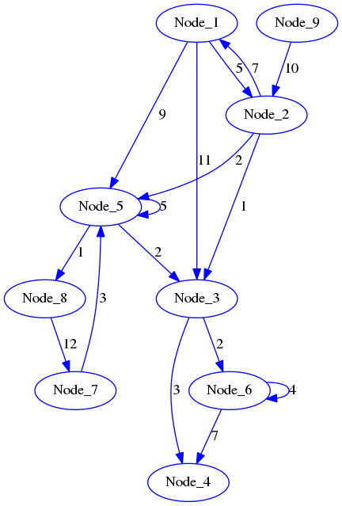

Module 2, Practical 10¶
Dynamic programming¶
Two approaches exist:
Top-down: solve the problem by breaking it down in smaller subproblems. If the subproblem has already been solved, then the answer has already been saved somewhere. If it has not already been solved, compute a solution and store it. This method is called memoization;
Bottom-up: solve the problem by starting from the most trivial subproblems, going up until the complete problem has been solved. Smaller subproblems are guaranteed to be solved before bigger ones. This method is called dynamic programming.
Consider the classic example of the computation of Fibonacci numbers:
which can be computed by the following recursive formula:
This problem can be solved with the following recursive code:
[1]:
import time
def fib(n):
if n <= 1:
return n
else:
return fib(n - 1) + fib(n - 2)
for i in range(20):
print("Fib({})= {}".format(i, fib(i)))
for i in range(35,40):
start_t = time.time()
print("\nFib({})= {}".format(i, fib(i)))
end_t = time.time()
print("It took {:.2f}s".format(end_t-start_t))
Fib(0)= 0
Fib(1)= 1
Fib(2)= 1
Fib(3)= 2
Fib(4)= 3
Fib(5)= 5
Fib(6)= 8
Fib(7)= 13
Fib(8)= 21
Fib(9)= 34
Fib(10)= 55
Fib(11)= 89
Fib(12)= 144
Fib(13)= 233
Fib(14)= 377
Fib(15)= 610
Fib(16)= 987
Fib(17)= 1597
Fib(18)= 2584
Fib(19)= 4181
Fib(35)= 9227465
It took 5.47s
Fib(36)= 14930352
It took 8.76s
Fib(37)= 24157817
It took 12.93s
Fib(38)= 39088169
It took 21.43s
Fib(39)= 63245986
It took 33.32s
Although simple to code, the recursive solution performs some steps multiple times, as shown by the following recursion tree (for example f(3) is computed 5 times):

We can use dynamic programming to avoid computing over and over again the same values:
[2]:
import time
def fib_dp(n):
fib = [0]* (n+1)
if n > 1:
fib[1] = 1
for i in range(2, n + 1):
fib[i] = fib[i - 2] + fib[i - 1]
return fib[n]
for i in range(20):
print("Fib({})= {}".format(i, fib_dp(i)))
for i in range(35,38):
start_t = time.time()
print("\nFib({})= {}".format(i, fib_dp(i)))
end_t = time.time()
print("It took {:.2f}s".format(end_t - start_t))
#we can even do:
for i in range(1000,1003):
start_t = time.time()
print("\nFib({})= {}".format(i, fib_dp(i)))
end_t = time.time()
print("It took {:.2f}s".format(end_t - start_t))
Fib(0)= 0
Fib(1)= 0
Fib(2)= 1
Fib(3)= 2
Fib(4)= 3
Fib(5)= 5
Fib(6)= 8
Fib(7)= 13
Fib(8)= 21
Fib(9)= 34
Fib(10)= 55
Fib(11)= 89
Fib(12)= 144
Fib(13)= 233
Fib(14)= 377
Fib(15)= 610
Fib(16)= 987
Fib(17)= 1597
Fib(18)= 2584
Fib(19)= 4181
Fib(35)= 9227465
It took 0.00s
Fib(36)= 14930352
It took 0.00s
Fib(37)= 24157817
It took 0.00s
Fib(1000)= 43466557686937456435688527675040625802564660517371780402481729089536555417949051890403879840079255169295922593080322634775209689623239873322471161642996440906533187938298969649928516003704476137795166849228875
It took 0.00s
Fib(1001)= 70330367711422815821835254877183549770181269836358732742604905087154537118196933579742249494562611733487750449241765991088186363265450223647106012053374121273867339111198139373125598767690091902245245323403501
It took 0.00s
Fib(1002)= 113796925398360272257523782552224175572745930353730513145086634176691092536145985470146129334641866902783673042322088625863396052888690096969577173696370562180400527049497109023054114771394568040040412172632376
It took 0.00s
In the latter case we accumulated partial results in a list and re-used them when needed. Consider the following code:
[3]:
import time
def fib_dp(n):
fib = [0]* (n+1)
if n > 1:
fib[1] = 1
for i in range(2,n + 1):
fib[i] = fib[i - 2] + fib[i - 1]
return fib[n]
start_t = time.time()
for i in range(1,15000):
r = fib_dp(i)
end_t = time.time()
print("It took {:.2f}s".format(end_t-start_t))
It took 46.38s
In this case we repeated the computations several times anyway and had to recompute the solution all the time, which is a little bit of a waste of time. If we are not concerned about using more space we could modify the code in such a way to update a list and return the whole list, ready for a next iteration:
[4]:
import time
def fib_dpV2(n,fibList):
if n < len(fibList):
return fibList[n]
else:
if n == 0:
fibList.append(0)
return 0
if n == 1:
fibList.extend([0,1])
return 1
L = n - len(fibList)
for i in range(L):
# compute all the fibonacci values required to reach fib(n) and store them in the list...
fibList.append(fibList[-2] + fibList[-1])
return fibList[-1]
start_t = time.time()
myFibL = []
for i in range(1,15001):
r = fib_dpV2(i, myFibL)
end_t = time.time()
print("Fibonacci(15000) : {}".format(myFibL[-1]))
print("It took {:.2f}s".format(end_t-start_t))
print("Fibonacci 0..20: {}".format(myFibL[0:20]))
Fibonacci(15000) : 180356212817232358527136269558393274270479577287959770214783776455882580176808282935116449287253001675278567205597341664270703993136851989859494809191272208168671602010135312495296553662790352582033423080689757992520655785610316941531173588408998619812807392167094455165363355259485592278979388870298110870050912172411703995878726547708126588747557108886477742159519675726841476567233617069303168933729769224839193682942110633367322841686836744207977400786184404283243942571683714924012584054120950619420879245008334171878098209414559267738476048405512373264705915648256421029922854826089454770481653365776765021018110912210918296748113016817314353185049893148191072970004722127877580853512230597663125482412037507790122452840808247238862266940374952733301348535189028427982115508256085629078838285854519748549211253115363900979738960948772589014559911367102564396479380119671836661458473444680552841046388920629103926658110037230386547506816712866616340383491227279709660200771238944743897531289959511150305531873160607872566720751381188951153762201432960669039121243742888978686571778654570582578356003787537920689451735958244288072349086881269456351988300299442324421142440230312335818179554507414851349917896307630882698214864014344956780348499120670367075038565963319741348415248138037342603113034434198363994519415494026021710622105031596662576344941382709460665227123428132640271682951472209368453748754510035741638613590279538796566181871895713339174456728394471357415996934436202565485732749272347348991793493320243181956465786389970599533658454386144770652584880176519203467064567384636418219255416950945755037995377546451320680325530900980211314010182766809827492194845387482751225482662997765661866262382112219008183345652570682633899549560294736097218086788785294700336993482784319083980440026327099112563241621005721911339313568395785607613027063516725870186041444932874242502339316433484868302535616417673857358757000197098734066555060275659441540730179880840068680711039092402469979537402038522869532858210224421954879125281803617171486680299882175622463954938841161683824017764172124148438928242788323301450705633955505182591808014745581257657569980476219657313856171171041106956687416108450931365450698373196534957320986723454445945232416845732305494189207716358085853199984634824143123729540264742981573020172237026058046740201545250287662018382140146169998065636288937211877886621661690578651489040221004254744005525689460483194423394923570500857169107685204978377809144999120496376447004389621794981767672901579794816635242858841182877011991980777649470507584848234893126914722042071134658473351945026030226538176505680011883028482299815999170838410236573499975247752075137709072936793331605370102620992579010729955042839150039536988476316814658001111401786786920802580057225089821741914525126541381743907218686111921778056456742847181643346546263899570276608898254139702386798819800561168979805761661085945938400171610214159378775050985949240013649311708619468421748433514761538254173535727874452760668054213182096783214642043675647412439936425441952983174011449159555969819986536279264099966926245798558475510001
It took 0.02s
Fibonacci 0..20: [0, 1, 1, 2, 3, 5, 8, 13, 21, 34, 55, 89, 144, 233, 377, 610, 987, 1597, 2584, 4181]
Excercise¶
Catalan numbers (info here) are defined by the following recurrence equation:
the first few values are reported below:
\(1, 1, 2, 5, 14, 42, 132, 429, 1430, 4862, 16796, 58786,\) \(208012, 742900, 2674440, 9694845, 35357670, 129644790,\) \(477638700, 1767263190, 6564120420, 24466267020, 91482563640, ...\)
Write a recursive function
recCatalan(n)to compute the n-th catalan number;Write a dynamic programming function
dpCatalan(n)to compute the n-th catalan number.
Test your code with:
catN = []
for i in range(0,15):
catN.append(recCatalan(i))
print("First 15 catalan numbers:")
print(catN)
Finally, check how long it takes to compute the 20th catalan number with the recursive algorithm and with the dynamic programming one.
Show/Hide Solution
Finding (the optimal) overlaps among DNA strings¶
As another example of dynamic programming, let’s consider the problem of finding overlaps between two reads. This is quite an important problem for genome assembly and since sequencers nowadays produce several thousands/millions of (long) reads, devising efficient algorithms to find overlaps between two reads is quite important in this field.
Note in fact that, given a set of \(N\) reads, assembly algorithms need to find the best overlaps among all of them, which means testing \(N * (N-1)\) pairs.
Given two reads \(X\) and \(Y\) the optimal overlap among them is the longest suffix of \(X\) that matches (possibly with some mismatches) a prefix of \(Y\).
Example:
We are basically interested in finding the best alignment of a suffix of \(X\) on a prefix of \(Y\) taking possible errors in consideration.
First of all we need to define a score function that given two bases (among the possible 4: A,T,C,G and the gap “-”), returns a score reporting the goodness of the match of the two bases:
which basically penalizes mismatches by giving them a high score. Our aim would be to find the longest string with the lowest score starting from the end of the first string backwards.
Given the two strings \(X\) and \(Y\), the so called global alignment recurrence is the following:
The first row of the matrix corresponds to “-” in \(X\) and all elements are initialized to \(\infty\), while the first column corresponds to a “-” in \(Y\) and all elements are initialized to 0.
Intuitively, the first row represents the case in which we want to match a base in \(X\) with a gap “-” in \(Y\) (and therefore we do not use characters of \(Y\)), in the second row we match a base in \(Y\) with a gap “-” in \(X\) and in the third we have a base from both.
We can impose a minimum length \(N\) of the overlap by setting to infinity the last \(N-1\) elements of the first column and setting to infinity (at the end) the first \(N\) columns of the last row.
The output of this procedure is a matrix like (where the highlighted elements are actually the overlap):
For now we will see the code that builds the matrix. Obtaining the actual overlap will involve travelling back up from the last row of the matrix
[2]:
import math
def score(a,b):
mat = {}
mat["A"] = {"A" : 0, "C" : 4, "G" : 2, "T" : 4, "-" : 8}
mat["C"] = {"A" : 4, "C" : 0, "G" : 4, "T" : 2, "-" : 8}
mat["G"] = {"A" : 2, "C" : 4, "G" : 0, "T" : 4, "-" : 8}
mat["T"] = {"A" : 4, "C" : 2, "G" : 4, "T" : 0, "-" : 8}
mat["-"] = {"A" : 8, "C" : 8, "G" : 8, "T" : 8, "-" : 8}
return mat[a][b]
def computeMatrix(X,Y, minLen = 0):
# + 1 is for leading "-"
x_len = len(X) + 1
y_len = len(Y) + 1
print(X)
print(Y)
A = []
#initialize first column to 0 and first row to infinite
for i in range(x_len - minLen + 1):
A.append([0])
for i in range(minLen - 1):
A.append([math.inf])
for i in range(y_len - 1):
A[0].append(math.inf)
# compute the rest of the score matrix
for i in range(1,x_len):
for j in range(1,y_len):
c1 = A[i-1][j] + score(X[i-1], "-")
c2 = A[i][j-1] + score("-", Y[j-1])
c3 = A[i-1][j-1] + score(X[i-1],Y[j-1])
#print("i,j: {},{}".format(i,j))
A[i].append(min([c1,c2,c3]))
if minLen != 0:
for i in range(0,minLen):
A[-1][i] = math.inf
return A
def plotMatrix(Mat, X,Y):
X = "-" + X
outStr = "\t-" +"\t"+ "\t".join(list(Y))
for i in range(len(X)):
outStr+="\n" + X[i] +"\t"+ "\t".join([str(x) for x in Mat[i]])
print(outStr)
X = "CTCGGCCCTAGG"
Y = "GGCTCTAGGCCC"
A = computeMatrix(X,Y,minLen = 5)
print("The overlap matrix:")
plotMatrix(A,X,Y)
print("\n")
X1 = "AATATACATAC"
Y1 = "TACGTACTTA"
B = computeMatrix(X1,Y1, minLen = 4)
print("The overlap matrix:")
plotMatrix(B,X1,Y1)
print("\n")
X3 = "ACACGGATT"
Y3 = "CGGTATT"
D = computeMatrix(X3,Y3, minLen = 3)
print("The overlap matrix:")
plotMatrix(D,X3,Y3)
CTCGGCCCTAGG
GGCTCTAGGCCC
The overlap matrix:
- G G C T C T A G G C C C
- 0 inf inf inf inf inf inf inf inf inf inf inf inf
C 0 1 2 3 4 5 6 7 8 9 10 11 12
T 0 1 2 3 4 5 6 7 8 9 10 11 12
C 0 1 2 3 4 5 6 7 8 9 10 11 12
G 0 1 2 3 4 5 6 7 8 9 10 11 12
G 0 1 2 3 4 5 6 7 8 9 10 11 12
C 0 1 2 3 4 5 6 7 8 9 10 11 12
C 0 1 2 3 4 5 6 7 8 9 10 11 12
C 0 1 2 3 4 5 6 7 8 9 10 11 12
T inf 1 2 3 4 5 6 7 8 9 10 11 12
A inf 2 2 3 4 5 6 7 8 9 10 11 12
G inf 3 3 3 4 5 6 7 8 9 10 11 12
G inf inf inf inf inf 5 6 7 8 9 10 11 12
AATATACATAC
TACGTACTTA
The overlap matrix:
- T A C G T A C T T A
- 0 inf inf inf inf inf inf inf inf inf inf
A 0 1 2 3 4 5 6 7 8 9 10
A 0 1 2 3 4 5 6 7 8 9 10
T 0 1 2 3 4 5 6 7 8 9 10
A 0 1 2 3 4 5 6 7 8 9 10
T 0 1 2 3 4 5 6 7 8 9 10
A 0 1 2 3 4 5 6 7 8 9 10
C 0 1 2 3 4 5 6 7 8 9 10
A 0 1 2 3 4 5 6 7 8 9 10
T inf 1 2 3 4 5 6 7 8 9 10
A inf 2 2 3 4 5 6 7 8 9 10
C inf inf inf inf 4 5 6 7 8 9 10
ACACGGATT
CGGTATT
The overlap matrix:
- C G G T A T T
- 0 inf inf inf inf inf inf inf
A 0 1 2 3 4 5 6 7
C 0 1 2 3 4 5 6 7
A 0 1 2 3 4 5 6 7
C 0 1 2 3 4 5 6 7
G 0 1 2 3 4 5 6 7
G 0 1 2 3 4 5 6 7
A 0 1 2 3 4 5 6 7
T inf 1 2 3 4 5 6 7
T inf inf inf 3 4 5 6 7
Download the complete source file: computeMatrixScore.py
Exercise¶
Implement the following method:
getOverlap(Mat, X,Y)where Mat is the matrix computed withcomputeMatrix,XandYare the two strings. The function should:find the rightmost minimum in the last row of the matrix;
back track through the matrix moving on the smallest of the neighboring positions (i.e. from A[i,j] move to min(A[i-1,j], A[i-1,j-1], A[i, j-1]) updating the overlap string accordingly. For example, the following matrix:
should produce the overlap:
If needed, feel free to write another method that prints off the overlap.
You can test your methods with the following code:
X = "CTCGGCCCTAGG"
Y = "GGCTCTAGGCCC"
A = computeMatrix(X,Y,minLen = 5)
print("The overlap matrix for {} and {}:".format(X,Y))
plotMatrix(A,X,Y)
(s1,s2,s,e) = getOverlap(A,X,Y)
printAligns(s1,s2,s,e)
print("\n")
X1 = "AATATACATAC"
Y1 = "TACGTACTTA"
B = computeMatrix(X1,Y1, minLen = 4)
print("The overlap matrix for {} and {}:".format(X1,Y1))
plotMatrix(B,X1,Y1)
(s1,s2,s,e) = getOverlap(B,X1,Y1)
printAligns(s1,s2,s,e)
print("\n")
X2 = "ACACGGATT"
Y2 = "CGGTATT"
C = computeMatrix(X2,Y2, minLen = 3)
(s1,s2,s,e) = getOverlap(C,X2,Y2)
printAligns(s1,s2,s,e)
print("\n")
X3 = "GTCAGTCAATCTACTCGGAAACTATACACCG"
Y3 = "AACTATTTCCGTAACACGGATT"
D = computeMatrix(X3,Y3, minLen = 8)
(s1,s2,s,e) = getOverlap(D,X3,Y3)
printAligns(s1,s2,s,e)
print("\n")
X4 = "ATCGGTTCGGTGAAGTAA"
Y4 = "CGGTGACGTTACCATATCCAG"
E = computeMatrix(X4,Y4, minLen = 8)
(s1,s2,s,e) = getOverlap(E,X4,Y4)
printAligns(s1,s2,s,e)
Show/Hide Solution
Greedy programming¶
In the greedy programming paradigm, at each step of the computation the choice that seems the best at the time is always taken. In other words, greedy algorithms build a solution by choosing the local best value in the hope that this would lead to a global best solution. As we will see later, this is not always guaranteed.
Example: Let’s write a method that a vending machine can use to give change using the least amount of coins of 50, 20, 10, 5, and 1 cents.
[6]:
def giveChange(amount):
#res counts the used coins
#having value 50,20,10,5,1
print("Computing change of {} cents".format(amount))
coins = [50,20,10,5,1]
res = [0,0,0,0,0]
while amount > 0:
nextCoin = 0
#order makes greedy choice! First 50,then 20, 10...
if amount > 50:
res[0] += 1
nextCoin = 50
elif amount > 20:
res[1] += 1
nextCoin = 20
elif amount > 10:
res[2] += 1
nextCoin = 10
elif amount > 5:
res[3] +=1
nextCoin = 5
else:
res[4] += 1
nextCoin = 1
amount -= nextCoin
for i in range(len(coins)):
if res[i] > 0:
print("{} x {} cent coins".format(res[i],coins[i]))
giveChange(36)
giveChange(72)
giveChange(232)
Computing change of 36 cents
1 x 20 cent coins
1 x 10 cent coins
1 x 5 cent coins
1 x 1 cent coins
Computing change of 72 cents
1 x 50 cent coins
1 x 20 cent coins
2 x 1 cent coins
Computing change of 232 cents
4 x 50 cent coins
1 x 20 cent coins
1 x 10 cent coins
2 x 1 cent coins
In the previous case, the greedy choice was to pick all the time the coin with highest possible value.
Greedy algorithms sometimes do not produce the optimal best solution.
Considering the following tree, if the goal is to find the maximum sum from root to leaves of a tree, a greedy algorithm that always picks the biggest value would not lead to the correct solution:
where greedy choices have been highlighted in red.
Note that greedy algorithms stop when no more choices can be made, without looking back (back-tracking) to see if any better solution could be found. Despite the limitations, sometimes greedy algorithms can provide a close enough approssimation of the global optimum solution.
Exercises¶
Egyptian fractions (info here) are fractions where the numerator is 1 and the denominator is a positive integer. Every fraction can be represented as a sum of Egyptian fractions (an infinite number of fractions actually). The algorithm that, given a fraction \(\frac{N}{D}\) produces one equivalent Egyptian fraction is the following:
find the greatest possible unit fraction \(U=\frac{1}{x}\) still dividing \(\frac{N}{D}\) (this is \(x=\lceil \frac{D}{N}\rceil\)) (note that this is a greedy choice!);
store \(x\), compute \(\frac{N}{D} - \frac{1}{x}\) updating \(N\) and \(D\) and repeat until the remaining fraction becomes 0 (i.e. the numerator becomes 0);
Implement a Fraction class (having two attributes denominator and numerator) and a getEgyptianFraction method that returns a list of Fraction objects representing the same fraction.
Show/Hide Solution
The algorithm of Dijsktra is a very important algorithm to find the shortest path among a node and all the others in a weighted graph. The pseudocode of the algorithm follows (credit: http://www.gitta.info/Accessibiliti/en/html/Dijkstra_learningObject1.html):
Note that the algorithm is greedy in the sense that at each iteration the node with the smallest distance is picked. Implement the algorithm of Dijstra for the DiGrapLL class.
Modify the algorithm to report the shortest path between two nodes.
Test the code with the following graph:
which can be obtained by:
G = DiGraphLLAnalyzer()
for i in range(1,10):
G.insertNode("Node_" + str(i))
G.insertEdge("Node_1", "Node_2",5)
G.insertEdge("Node_2", "Node_1",7)
G.insertEdge("Node_1", "Node_3",11)
G.insertEdge("Node_1", "Node_5",9)
G.insertEdge("Node_2", "Node_3",1)
G.insertEdge("Node_2", "Node_5",2)
G.insertEdge("Node_3", "Node_4",3)
G.insertEdge("Node_3", "Node_6",2)
G.insertEdge("Node_5", "Node_3",2)
G.insertEdge("Node_5", "Node_5",5)
G.insertEdge("Node_6", "Node_4",7)
G.insertEdge("Node_6", "Node_6",4)
G.insertEdge("Node_7", "Node_5",3)
G.insertEdge("Node_5", "Node_8",1)
G.insertEdge("Node_8", "Node_7",12)
G.insertEdge("Node_9", "Node_2",10)
root = "Node_1"
D,P = G.Dijkstra(root)
for dist in D:
if D[dist] != math.inf:
print("Distance {} - {}: {}".format(root,
dist,
D[dist]))
prev = P.get(dist,None)
tmp = dist
cnt = 0
while prev != None:
print("{}{} <-- {}".format("\t"*cnt,tmp,prev))
tmp = prev
prev = P.get(prev,None)
cnt += 1
Show/Hide Solution